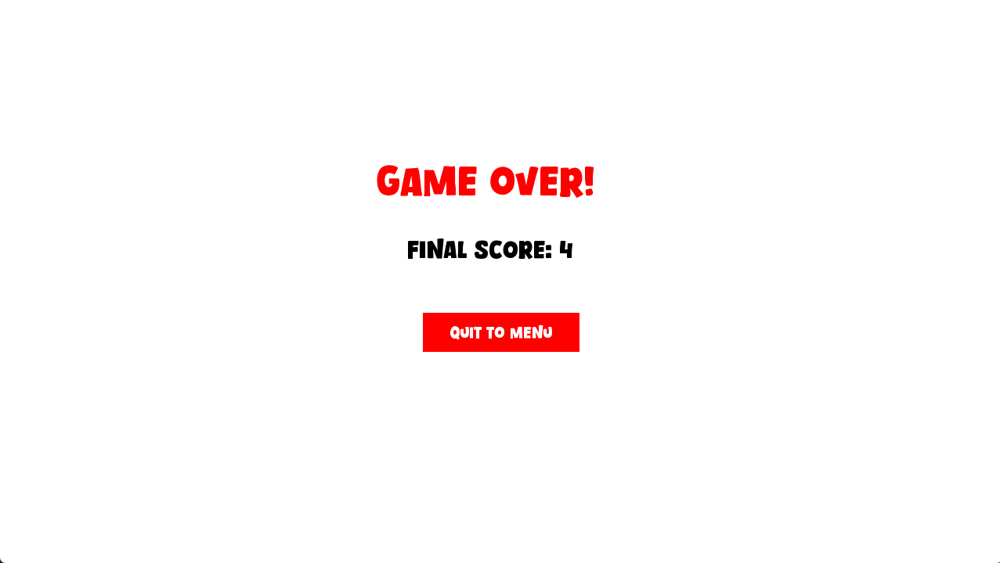
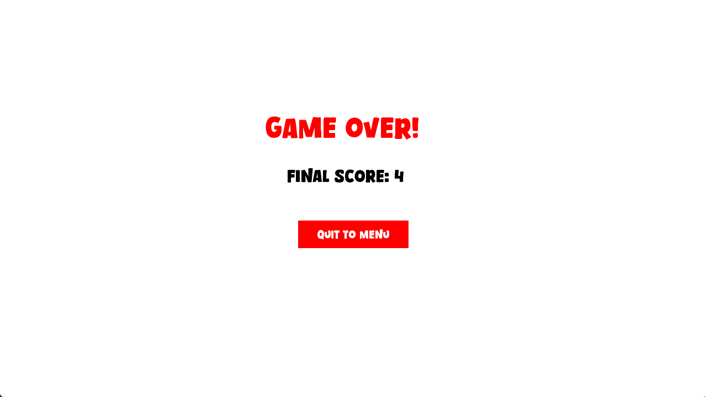

About
This is a simple turn-based combat game that I developed using C++ and SFML as part of a university programming assignment. Players can choose between character classes and battle a procedurally controlled enemy through attack, heal, or do-nothing actions. High scores are tracked and stored between sessions, and the game features a robust scene management system.
Project Info
- Role: Engineer
- Team Size: 1
- Duration: 4 weeks
- Framework: C++ with SFML
Description
I structured the game around a modular scene system (main menu, character selection, fight, and game over scenes). Players can interact using mouse-based UI buttons for in-game actions. Each game object, such as buttons or text, inherits from a base GameObject class and is managed through custom scene logic.
SceneHandler and Turn System
The SceneHandler controls scene transitions and handles player/enemy turns using a TurnState enum. The enemy acts via a probabilistic decision tree (attack, heal, do nothing) and waits 1.5 seconds before its turn executes. Player death or exiting to menu triggers high score storage.
Combat and Characters
I added three character classes (Tank, Assassin, Mage) which influence player stats like health, attack, and heal values. Players interact with the enemy through actions. Enemy AI resets upon defeat, and player performance is recorded through a dynamic score counter.
High Score Management
The game includes a HighscoreManager that saves scores to disk using file I/O. High scores are updated after death or when quitting mid-game (if the score exceeds 1). Scores are displayed on the main menu via a dynamic TextObject.
Game Flow & UI Feedback
Text objects display feedback during combat and update in real-time to show health, actions, and scores. A delay system ensures the game feels turn-based, with visual cues between turns. The UI is constructed entirely with SFML components.
What I Learned
Through this project, I learned more about core C++ principles such as object-oriented design, file I/O, inheritance, and memory management. I gained experience working with event-driven systems, pointers vs. references, and practical use of SFML for 2D UI and rendering.
Gallery
 
